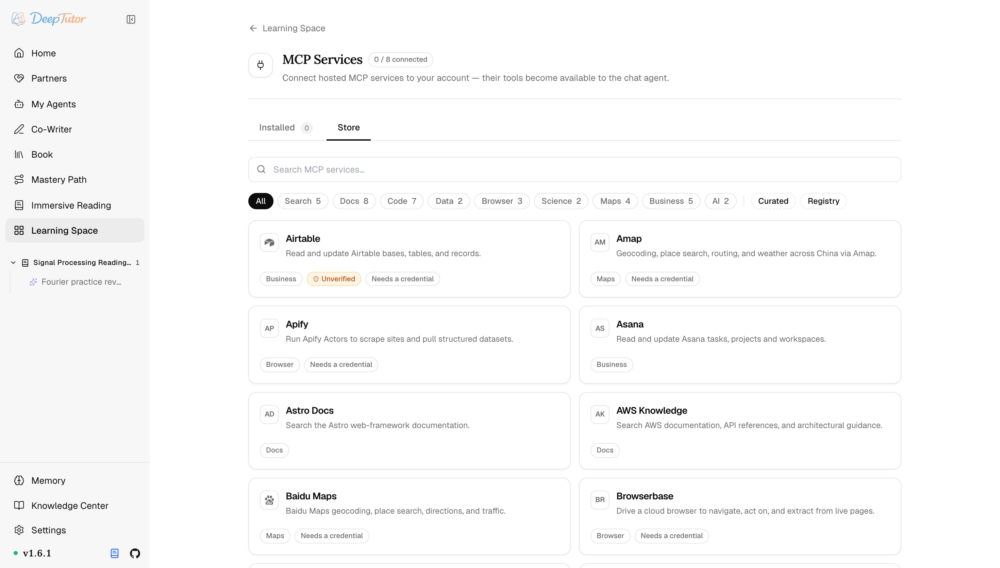

DeepTutor 生態MCP 擴充
38 個 MCP 服務一鍵接入！DeepTutor 工具生態的最強玩法，金鑰只貼一次，附完整教學！｜零度解說
按帳號連線託管的 Model Context Protocol 服務，或由管理員透過部署註冊表管理全域伺服器。
原文連結：https://docs.deeptutor.info/zh-cn/ecosystem/mcp/
最近給 DeepTutor 接外部工具，我把 MCP（模型上下文協定）擴充翻了個底朝天。
數字先擺出來：商店裡現在有 38 個託管伺服器可以直接連，完整目錄裡還有 7 個僅管理員可用的 stdio 定義。
它的作用一句話講清：把 DeepTutor 之外的工具，帶進和內建工具相同的智慧代理（Agent）迴圈。遠端服務連到個人帳號，部署級伺服器則由管理員統一管理。
很多人看到這裡，基本就放棄了：又是金鑰又是授權，接個工具比裝軟體還麻煩。
實際上 DeepTutor 把這套流程做得相當順滑，金鑰只貼一次，授權過期還會主動提醒你重連。接下來我們把商店、連線、全域註冊表三個部分一次講清楚。
瀏覽商店
開啟學習空間 → MCP 服務。
Installed 顯示當前帳號已連線的服務；Store 提供 38 個託管伺服器。
完整目錄還有 7 個僅管理員可用的 stdio 定義，因此不會出現在自助商店裡。

卡片會標出分類、是否需要憑據，以及條目是本版本精選還是來自公共註冊表。
連線後，服務工具透過正常的工具發現流程進入智慧代理；選擇器會先把工具摺疊在一個服務條目下，而不是一次甩出幾百份 schema（工具引數說明）。
連線託管服務
流程取決於伺服器的要求，一共三種情況：
| 伺服器需要 | 連線方式 |
|---|---|
| 無需憑據 | 一鍵立即連線。 |
| API key | 只貼上一次；伺服器設定儲存 ${secret:…} 引用，而不是權杖本身。 |
| OAuth | DeepTutor 執行帶 PKCE 和動態使用者端註冊的 OAuth 2.1，並儲存該帳號的授權。 |
API 金鑰（API key）只需要貼上一次，伺服器設定裡儲存的是 ${secret:…} 引用，而不是權杖本身，設定檔案裡不會留明文金鑰。
OAuth（開放授權）這檔更省心：DeepTutor 執行帶 PKCE（授權碼交換證明金鑰）和動態使用者端註冊的 OAuth 2.1，並儲存該帳號的授權。
後台重連不會卡在同意頁面。授權過期後，服務狀態變為 needs auth，介面會重新提供 Connect 操作，點一下就好。
真能跑的關鍵就在這些細節上：不用每次都從頭走一遍授權。
新增商店外的服務
商店不夠用？在 Installed 中選擇 Add a server by URL，可以連線任意遠端 MCP 端點。
同一頁面裡的 Deployment registry 管理部署級 mcp.json 條目，所有帳號都會獲得這些伺服器。
這裡有條硬規則：自助商店拒絕 stdio，因為命令列會以應用使用者身份執行；這類伺服器必須由管理員寫入部署註冊表。
舊的 /settings/mcp 路徑會跳轉到這裡，老書籤不用慌。
憑據與授權
按帳號儲存的 MCP 憑據位於程式碼沙箱永不掛載的 data/system。
多使用者部署中，非管理員授權按工具名設定白名單，預設拒絕；執行時還會再次檢查權限，而不只是在展示 schema 時檢查。
權限檢查發生在真正執行的那一刻，不是擺設。
對於把 DeepTutor 部署給整個班級或團隊用的朋友來說，這一點可以放心不少。
最後照例提醒一句：部署過程遇到問題，歡迎在留言區留言，把報錯的完整日誌貼出來，我看到會回覆。
另見
- Skill 擴充 ——只包含指令的工作流擴充
- CLI-App 擴充 ——安裝在部署上的沙箱化命令列工具
- 多使用者部署 ——編輯帳號授權